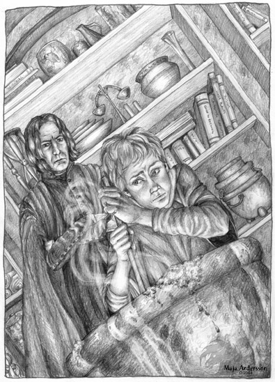

Il Calderone Stregato
Si tratta di un piccolo calderone di metallo scuro. Al suo interno vi è una boccetta di vetro spesso e color fumo con un tappo di sughero.

STORIA
Nel 80 p.n. inflictus il nobile ad honorem Harogos Valèrian un membro del ramo esterno della nobile famiglia, mago rinnegato, dopo anni di ricerche, desideroso di riscattare il suo ruolo all'interno della famiglia del Granduca, riuscì nella sua impresa. Il suo obiettivo era quello di costruire un magico oggetto in grado di trasformare la semplice acqua in pozioni magiche. Usò quindi i suoi fondi personali dilapidando il proprio patrimonio per cercare e catturare una potente strega con il suo calderone. Molti sottoposti ed avventurieri perirono in questa impresa ma alla fine Harogos ebbe la meglio e catturò l'orribile creatura ed il suo strumento stregato. Convinto che solo la magia dell'antico metodo potesse aiutarlo nel trasformare il calderone in un potente oggetto magico e non essendo un mago di estrema potenza (si dice avesse raggiunto ormai in età senile il 7° livello di esperienza) iniziò un antico rituale modificandolo con aggiunte e varianti. Uccise la strega imprigionata versando il suo sangue nel calderone affinché venisse lentamente assorbito dal suo metallo. Non riuscendo, però, ad ottenere i risultati sperati chiese l'intervento di un potente mago summoner il cui nome rimase sconosciuto. Costui fornì, dietro favori ed una lauta ricompensa, una potente pergamena magica ad Harogos con la quale costui chiamò un potente demone da un altro piano dimensionale obbligandolo a portare il calderone nel suo inferno per incantarlo e poi portarlo di nuovo nel mondo di Arelia. Il demone obbedì ed al suo ritorno il calderone appariva potentemente incantato ed in grado di trasformare in pozioni magica la semplice acqua. L'oggetto però concentrò in se le energia malvagie della strega e degli inferi ed attirò le attenzioni delle divinità malvagie che decisero di punire Harogos e di maledire il calderone.
POWERS
Il Calderone è un artefatto di bassa potenza che può essere utilizzato solo da utenti di magia (chierici e maghi). Qualora venga utilizzato da personaggi di classi differenti semplicemente non si attiverà.
Invocati:
Il Calderone può essere utilizzato per creare filtri magici e pozioni. Il procedimento è il seguente, occorre riempire il calderone di acqua e disporlo sul fuoco (qualsiasi altro liquido funziona). Per un intero giorno il liquido nel calderone deve essere mescolato, con l'aggiunta di speciali sali dal valore di 50 g.p., fino a che non sia ridotto ad una quantità corrispondente a quella di una pozione magica. Durante il procedimento il calderone sprigiona fumi verdastri nauseabondi. Alla fine della giornata si tira un dado percentuale, l'utente di magia che lo usa ha il 10% per livello di esperienza di aver creato una pozione magica. Un risultato da 91 a 100 darà luogo alla maledizione dell'artefatto. La pozione creata sarà casuale fra le quattro possibili (tirare 1d20):
(1-5) Potion of Least Defence (xp 200, valore 500) Azzurro
Chi la beve guadagna 1 punto di classe armatura magico (si considera come punto totalmente mancato dal nemico). L'effetto dura 1 turno.
(6-10) Potion of Champion Strenght (xp 200, valore 500) Rosso
Chi la beve guadagna forza straordinaria (Forza 18/80) e può essere usata da qualsiasi classe di personaggio. L'effetto dura 1 turno.
(11-15) Potion of Infravision (xp 200, valore 500) Viola
Chi la beve guadagna un'infravisione per per 18 metri (chi già possiede l'infravisione guadagna ulteriori 18 metri di raggio). L'effetto dura 1d8 turni.
(16-20) Potion of Polymorph Self (xp 200, valore 350) Verde
Questa pozione duplica gli effetti dell'omonimo incantesimo di quarto livello dei poteri dei maghi, scuola alterazione. L'effetto dura 6 turni.
La pozione deve essere
inserita nella boccetta di
vetro color fumo che è
parte integrante del Calderone (quando si rompe, si allontana dal calderone
senza liquido magico, oppure si consuma il suo contenuto distanti dal calderone,
questa scompare e riappare vuota e pulita all'interno del calderone). Se
il liquido è trasferito in un altro contenitore perde immediatamente le sue
caratteristiche magiche.
Maledizione:
· Fumi Tossici, Ogni volta che chi lo usa tira da 91 a 100 i fumi saranno particolarmente tossici e rovineranno gli organi respiratori di chi lo ha usato. Costui sarà colto alla fine del procedimento da un attacco di asma che gli impedirà di compiere qualsiasi attività per un periodo di 1d12+5 giorni nei quali dovrà solo riposare. Inoltre dovrà superare un tiro salvezza contro morte per non soffrire di effetti permanenti. Se il tiro fallisce la vittima subirà un indebolimento permanente perdendo per sempre 1 punto ferita.
· Artifact Possession:
Tentativo di dominio: Il Calderone prova a dominare chi lo utilizza ogni volta che costui crea una pozione.
Prova di dominio: Il Calderone ha una personalità pari a 30 punti mentre la personalità di un personaggio è data dalla somma di Intelligenza Saggezza e Livello di Esperienza. Ad ogni tentativo di impossessamento entrambi tirano 1d20 ed aggiungono la loro personalità, se il Calderone vince sarà riuscito a dominare il suo possessore.
Effetti permanenti dell'impossessamento: Quando il Calderone si impossessa di una creatura per la prima volta questa diviene incredibilmente gelosa del Calderone, lo ritiene di sua proprietà e si adopera nel modo più appropriato per proteggerlo e difenderlo. Dovrà essere sempre in grado di sapere deve si trova il Calderone ed impedirà ad altri di usarlo e perfino di vederlo. Inoltre, chi è impossessato dovrà superare una prova combinata dei suoi punteggi di intelligenza e saggezza ogni mese, se la prova fallisce vorrà necessariamente provare ad utilizzare il Calderone nel mese in questione. Questa ossessione perdurerà fino alla distruzione del Calderone, alla morte della creatura o fino a che il Calderone non riesca ad impossessarti di un'altra creatura. Si noti che il Calderone è un artefatto rudimentale che non fa differenza fra chi lo utilizza per cui proverà ad impossessarsi di tutti coloro siano in grado di utilizzarlo e ci provino. La creatura può essere liberata anche con una magia di "remove curse".
Effetti temporanei dell'impossessamento: Chi viene impossessato viene anche colto da una temporanea follia, prolungherà il lavoro per produrre la pozione di 9 giorni aggirandosi furiosamente attorno al Calderone e vaneggiando di ricette segrete per produrre potentissime pozioni (impiegando quindi 10 giorni totali). Si scaglierà inoltre in modo ossessivo contro chiunque provi a fermarlo o a farlo ragionare.
Modo di distruzione:
L'unico modo di distruggere il Calderone è quello provare ad utilizzarlo (occorre portare il tentativo fino a compimento) riempiendolo di acqua santa (10 boccette) della Fratellanza della Luce. Al termine della giornata di lavoro si verificherà una tremenda esplosione, tutti quelli entro 10 metri subiranno 10d6 di danni da fuoco dimezzabili con un tiro salvezza contro paralisi (mod. dalla destrezza). Allo stesso tempo il Calderone si sgretolerà per sempre in mille pezzi.